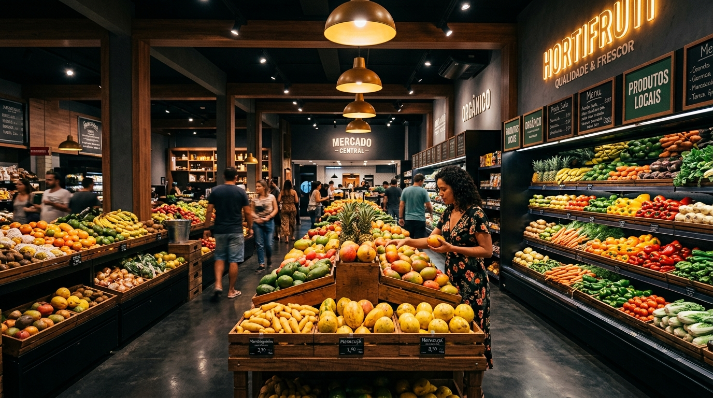
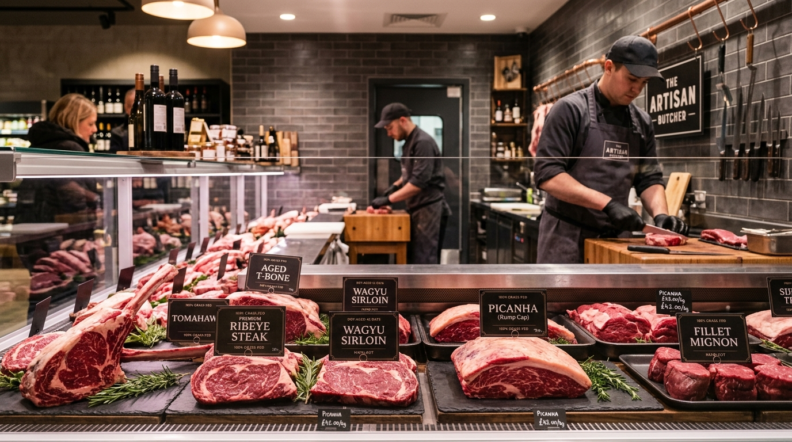
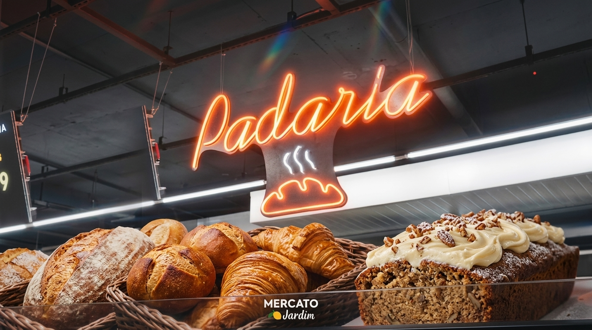
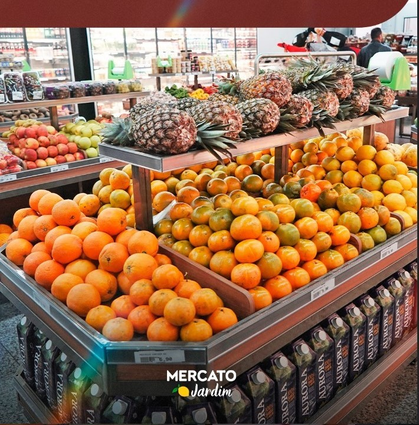
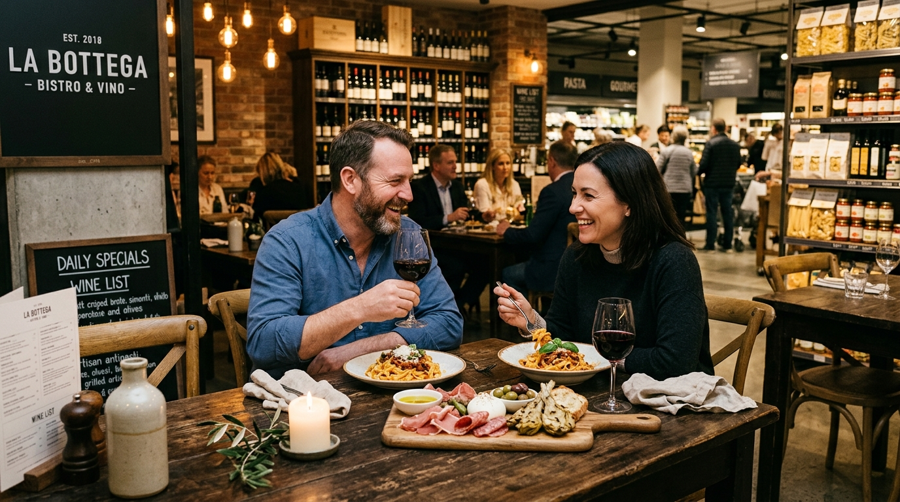

Mais que fazer compras: uma experiência gastronômica completa com açougue especializado, padaria artesanal, mercado com hortifrúti fresco e restaurante bistrô exclusivo.
Clique nas abas abaixo para navegar entre os setores e ver fotos exclusivas, diferenciais e especialidades de cada área.
Nosso açougue conta com padrão de corte internacional e consultoria de especialistas. Oferecemos desde as opções perfeitas para o churrasco até cortes nobres porcionados com higiene impecável e procedência rigorosamente auditada.
Picanhas importadas, Tomahawk, Ribeye, Ancho e linguiças artesanais especiais.
Nossos açougueiros preparam, limpam e fatiam exatamente no ponto desejado.
Câmara fria de alta tecnologia e controle térmico ininterrupto.
Peças inteiras temperadas ou prontas para assar para o seu evento.

O aroma inconfundível do pão recém-saído do forno acompanha você o dia todo. Produzimos pães de fermentação lenta com farinhas especiais, confeitaria tradicional e refinada, além de clássicos matinais preparados na chapa.
Sourdough rústico, ciabattas italianas, baguetes crocantes e croissants amanteigados.
Bolos caseiros, tortas doces, carolinas, torteletas de frutas e doces finos.
Grãos de café selecionados, cappuccino cremoso e pão na chapa com queijo da canastra.
Pãozinho francês sempre crocante e quente em qualquer horário que você visitar.

Uma curadoria de produtos nacionais e importados de mercearia, combinada ao nosso famoso hortifrúti com abastecimento diário. Frutas colhidas no ápice do sabor, verduras selecionadas, linha orgânica e itens essenciais para sua casa.
Chegada de produtores parceiros toda madrugada para garantir máximo sabor e durabilidade.
Produtos sem glúten, sem lactose, opções veganas, castanhas e grãos a granel.
Tábua de frios personalizada, queijos artesanais da Serra da Canastra e importados.
Massas italianas, azeites extravirgens premiados, temperos e produtos do dia a dia.

Viva uma pausa prazerosa durante seu dia. Nosso restaurante e bistrô traz pratos artesanais com massas frescas, carnes preparadas na brasa, tábuas de antepastos e uma carta de vinhos selecionada para harmonizar cada momento.
Receitas inspiradas na cozinha italiana com ingredientes frescos direto do mercado.
Deguste rótulos renomados harmonizados com nossas porções e tábuas especiais.
Wine Connection, noites de degustação de queijos e jantares temáticos.
Ambiente moderno e agradável, perfeito para almoços rápidos ou encontros com amigos.

Carrinhos adaptados para pets e ambiente preparado para o seu bichinho acompanhar você.
Mais de 300 rótulos selecionados entre vinhos nacionais, importados e espumantes.
Antepastos frescos, queijos fatiados na hora e pratos prontos para viagem.
Preços imperdíveis em produtos selecionados. Fique atento e aproveite enquanto durarem os estoques em nossas unidades.
Variedade completa de frutas, verduras e legumes frescos com descontos exclusivos nas duas unidades.
Picanha nobre, fraldinha, cortes de prime rib e linguiças artesanais selecionadas para o seu fim de semana.
Café passado na hora ou expresso acompanhado do clássico pão na chapa ou pão de queijo quentinho da padaria.
Seleção exclusiva de rótulos chilenos, argentinos e portugueses com condições especiais para abastecer sua adega.
O MERCATO Jardim nasceu com a missão de transformar a rotina de compras em um momento prazeroso, confortável e completo. Combinamos o calor de um empório de bairro com a sofisticação e variedade de um supermercado moderno.
Fomos pioneiros em São Paulo ao implantar uma verdadeira experiência Pet Friendly, permitindo que você compartilhe os momentos com seu amigo de quatro patas em um ambiente devidamente preparado e higiênico.
Equipe prestativa e pronta para auxiliar na escolha de cada item.
Reposição contínua e rigoroso padrão de qualidade em todos os setores.
Estrutura pensada para o acolhimento seguro de pets.
Duas unidades bem localizadas no coração de Santo André.
Reconhecido pelo atendimento, gastronomia e pioneirismo pet friendly.
Duas lojas completas para atender você e sua família com todo conforto e carinho.